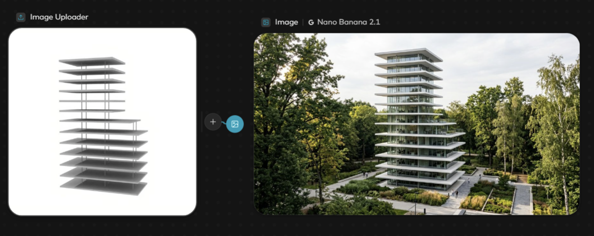
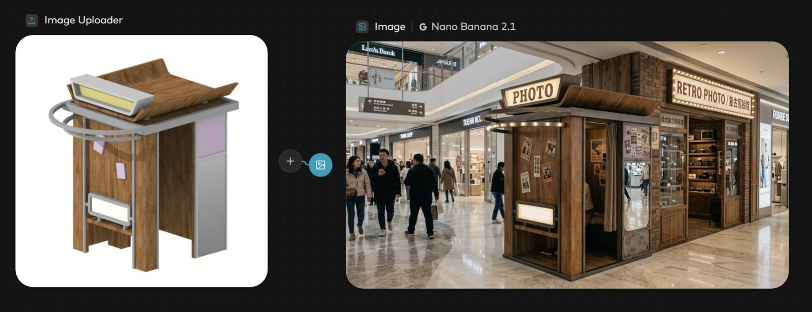
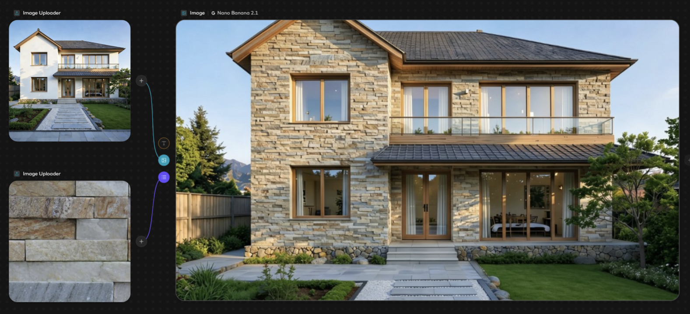
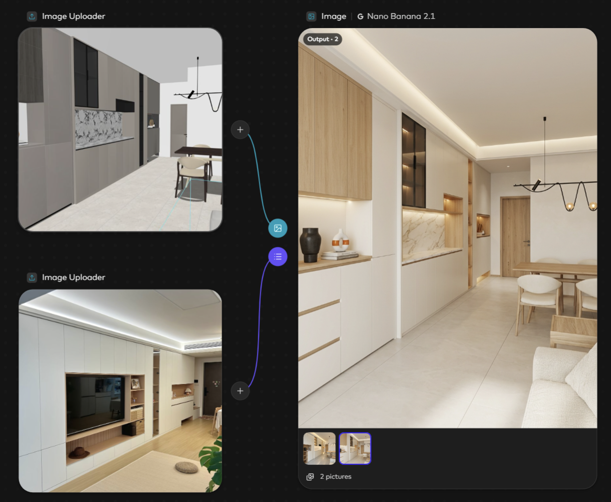
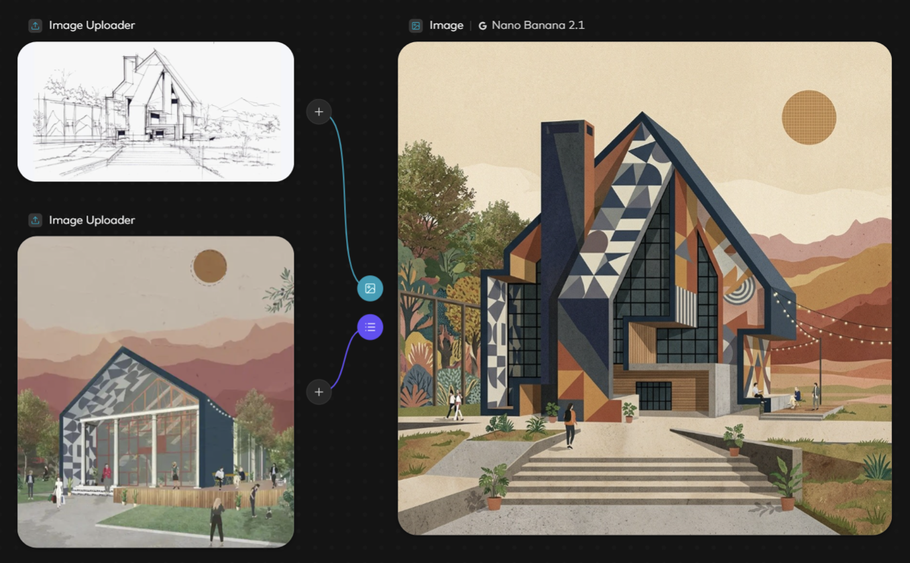
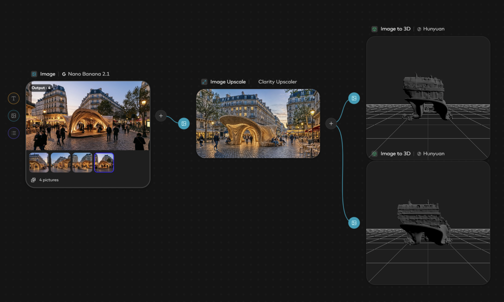

MODEL → SCENE
建筑模型生成场景效果图

Keep the clean white slabs and vertical composition of the office building @IMG1, change the setting to include lush greenery and environmental context such as trees and landscaping, lighting consistent with daytime, architectural photography, preserve perspective, high detail

A photo booth pop-up kiosk at the entrance of an American retro photo shop inside a large shopping mall in China. Exquisite and upscale American retro style, main structure of natural wood paired with matte metal, featuring a semi-circular ring outline lined with soft faint warm lights along its edge. The grey panels are mirrors, and the purple panels are decorated with vintage posters. A light box with prominent glowing "photo" lettering on the front. Soft ambient lighting, immersive atmosphere, delicate and eye-catching, soft diffused light, warm muted tones, high definition, rich details.
MATERIAL REPLACEMENT
建筑效果图替换材质

Keep the massing and composition @IMG1, change the wall material to the textured stone finish @IMG2, lighting consistent with source, architectural photography, preserve perspective, high detail
REFERENCE-DRIVEN EDITING
参考效果调整建筑效果图

Keep the layout and structure of @IMG1, change the color palette to warm tones inspired by the design elements in @IMG2, incorporating natural wood finishes and soft textiles, with sunlight streaming in to enhance the warmth, lighting consistent with source, architectural photography, preserve perspective, high detail.
STYLE TRANSFER
参考材质贴图生成建筑风格图像

Keep the massing and angular composition of the building @IMG1, change the facade to a vibrant, geometric pattern with contrasting colors and textures as seen in @IMG2, lighting consistent with source, digital illustration style, preserve perspective, high detail
IMAGE → IMAGE → 3D
图生图，图生模型

Biomorphic architecture, computational design, continuous timber ribs, twisted branching supports, flowing wooden shell, complex curved canopy, intricate parametric geometry.